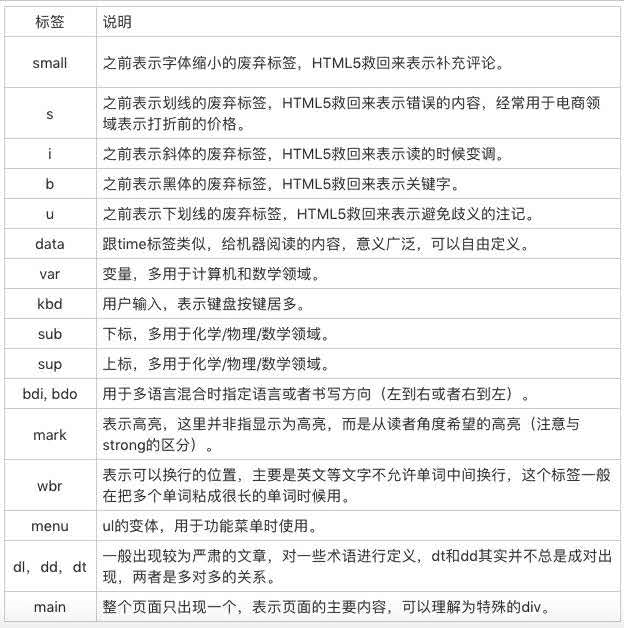

我们都知道：程序=算法+数据结构，那么，对运行时来说，类型就是数据结构，执行过程就是算法
语义类标签的特点是视觉表现上互相都差不多，主要的区别在于它们表示了不同的语义，比如大家会经常见到的section、nav、p，这些都是语义类的标签
语义是我们说话表达的意思，多数的语义实际上都是由文字来承载的。语义类标签则是纯文字的补充，比如标题、自然段、章节、列表，这些内容都是纯文字无法表达的，我们需要依靠语义标签代为表达
我支持在任何“软件界面”的场景中，直接使用div和span。不过，在很多工作场景里，语义类标签也有它们自己无可替代的优点。正确地使用语义标签可以带来很多好处：
- 1）对于开发者更为友好，增强了可读性，即使是在没有CSS的时候，也能够清晰地看出网页的结构，也更为便于团队的开发和维护
- 2）十分适合机器阅读
对于语义标签：“用对”比“不用”好，“不用”比“用错”好。有理想的前端工程师还是应该去追求“用对”它们
语义标签的使用第一个场景，也是最自然的使用场景：作为自然语言和纯文本的补充，用来表达一定的结构或者消除歧义
在HTML5中，引入了表示fuby的标签（注解），它由ruby、rt、rp三个标签来实现
HTML的有些标签实际上就是必要的，甚至必要的程度可以达到：如果没有这个标签，文字会产生歧义的程度
em表示重音
hgroup生成标题结构，其中的h1-h6被视为同一标题的不同组成部分
section的嵌套会使得上的h1-h6下降一级
article里面的内容：
- 1）header，表示导航或者介绍性的内容
- 2）footer，通常在底部，包含一些作者信息、相关链接、版权信息等
- 3）aside表示跟文章主体不那么相关的部分，它可能包含导航、广告等工具性质的内容。不仅仅是侧边栏
- 4）address表示一个给机器阅读的地址
abbr标签表示缩写
hr表示故事走向的转变或者话题的转变
p表示自然3段
strong表示重要的内容
blockquote表示段落级引述内容，q表示行内的引述内容，cite表示引述的作品名
time表示机器阅读的时间标签
figcaption表示内容的标题，figure表示与主文章相关的图像、照片等流内容
dfn用来包裹被定义的名词
ol和ul区分内容是否有顺序关系，每一项的前面不论是数字还是点，都不会影响语义的判断
pre表示程序语言，samp表示计算机程序的示例输出，code包含代码

undefined类型表示未定义，它的类型只有一个值，就是undefined。任何变量在赋值前是undefined类型、值为undefined，一般我们可以用全局变量undefined来表达这个值，或者void去处来把任意一个表达式变成undefined值。undefined是一个变量，而并非是一个关键字，这是js的设计失误，所以为了避免无意中被篡改，建议使用void 0来获取undefined值
undefined跟null有一定的表意差别，null表示的是“定义了但是为空”
String的意义并非“字符串”，而是字符串的UTF16编码，字符串操作charAt、charCodeAt、length等方法针对的都是UTF16编码。所以，字符串的最大长度，实际上是受字符串的编码长度影响的。JS中的字符串是永远无法变更的，一旦字符串构造出来，无法用任何方式改变字符串的内容，所以字符串具有值类型的特征
JS中的Number类型基本符合双精度浮点数规则：
- 1）NaN，占用了9007199254740990
- 2）Infinity，无穷大
- 3）-Infinity，负无穷大
JS中有+0和-0的区别，除0会有可能得到正无穷大或负无穷大
浮点问题0.1+0.3问题：
- Math.abs(0.1+0.2-0.3) <= Number.EPSILON
- 检查等式左右两差的绝对值是否小于最小精度，才是正确的比较浮点数的方法
Symbol是一切非字符串的对象Key的集合，可以具有字符串类型的描述，但是即使描述相同，Symbol也不相等
JS的基本类型：
- Number
- String
- Boolean
- Symbol
3与new Number(3)是完全不同的值，一个是Number类型，一个是对象类型
在任何环境下，都建议传入parseInt的第二个参数，而parseFloat则直接把原字符串作为十进制来解析，它不会引入任何的其他进制，更多情况下，Number是比parseInt和parseFloat更好的选择
装箱转换，把基本类型转换为对应的对象，它是类型转换中一种相当重要的种类。装箱机制会频繁产生临时对象，在一些对性能要求较高的场景下，应该尽量避免对基本类型做装箱转换
在JS中，没有任何方法可以更改私有的Class属性，因此Object.prototype.toString是可以准确识别对象对应的基本类型的方法，它比instanceOf更准确
在JS中，规定了ToPrimitive函数，是对象类型到基本类型的转换，即拆箱转换
对象String和Number的转换都遵循“先拆箱再转换”的原则。拆臬转换会尝试调用valueOf和toString来获得拆箱后的基本类型。如果都不存在，或者没有返回基本类型，则会产生类型错误TypeError
《面向对象分析与设计》中，对象应该是下列事物之一：
- 1）一个可以触摸或者可以看见的东西
- 2）人的智力可以理解的东西
- 3）可以指导思考或行动（进行想象或施加动作）的东西
《面向对象分析与设计》中，对象特点：
- 1）对象具有唯一标识性：即使完全相同的两个对象，也并非同一个对象
- 2）对象有状态：对象具有状态，同一对象可能处于不同状态之下
- 3）对象具有行为：即对象的状态，可能因为它的行为产生变迁
在JS中，对象的状态和行为其实都被抽象为了属性。JS对象的特色是：对象具有高度的动态性，这是因为JS赋予了使用者在运行时为对象添改状态和行为的能力
数据属性具有四个特征：
- 1）value：就是属性的值
- 2）writable：决定属性是否可以被赋值
- 3）enumerable：决定for in能否枚举该属性
- 4）configurable：决定该属性能否被删除或者改变特征值
访问器属性（getter/setter）四个特征：
- 1）getter：函数或undefined，在取属性值时被调用
- 2）setter：函数或undefined，在设置属性值时被调用
- 3）enumerable：决定for in能否枚举该属性
- 4）configurable：决定该属性能否被删除或者改变特征值
访问器属性使得属性在读和写时执行代码，它允许使用者在写和读属性时，得到完全不同的值，它可以视为一种函数的语法糖
Object.defineProperty定义属性，可以改变数据属性特征。Object.getOwnPropertyDescriptor来查看
实际上JS对象是一个属性的索引结构，以字符串或者Symbol为key，以数据属性特征值或者访问器属性特征值为value
“基于类”的编程提倡使用一个关注分类和类之间关系开发模型。在这类开发语言中，总是先有类，再从类去实例化一个对象。类与类之间又可能会形成继承、组合等关系。类又往往与语言的类型系统整合，形成一定编译时能力
“基于原型”的编程看起来更为提倡程序员去关注一系列对象实例的行为，而后才去关注如何将这些对象，划分到最近的使用方式相似的原型对象，而不是将它们分成类。基于原型的面向对象系统通过“复制”的方式来创建新对象。一些语言的实现中，还允许复制一个空对象。这实际上就是创建一个全新的对象。基于原型和基于类都能够满足基本的复用和抽象需求，但是适用的场景不太相同
JS的原型系统：
- 1）如果所有对象都有私有字段[[prototype]]，就是对象的原型
- 2）读一个属性，如果对象本身没有，则会继续访问对象原型，直到原型为空或者找到为止
ES6提供了一系列内置函数，更为直接地访问操纵原型：
- 1）Object.create根据指定的原型创建新对象，原型可以是null
- 2）Object.getPrototypeOf获得一个对象的原型
- 3）Object.setPrototypeOf设置一个对象的原型
new运算接受一个构造器和一组调用参数，实际上做了几件事：
- 1）以构造器的prototype属性（与[[prototype]]区分）为原型，创建新对象
- 2）将this和调用参数传给构造器，执行
- 3）如果构造器返回的是对象，则返回，否则返回第一步创建的对象
早期没有Object.create等方法时，new运算是唯一一个可以指定[[prototype]]的方法
ES6中增加了class，在标准中删除了[[class]]相关的私有属性描述。类的写法实际上也是由原型运行时来承载的，逻辑上JS认为每个类是有共同原型的一组对象，类中定义的方法和属性则会被写在原型对象上。最主要的是类提供了继承能力。
JS中的对象分类：
- 1）宿主对象（host Objects）：由JS宿主环境提供的对象，它们的行为完全由宿主环境决定
- 2）内置对象（Built-in Objects）：由JS语言提供的对象：
- 固有对象（Intrinsic Objects）：由标准规定，随着JS运行时创建而自动创建的对象实例
- 原生对象（Native Objects）：可以由用户通过Array、RegExp等内置构造器或者特殊语法创建的对象

- 普通对象（Ordinary Objects）：由{}语法、Object构造器或者class关键字定义类创建的对象，它能够被原型继承
CSS的顶层样式表由两种规则组成的规则列表组成，一种被称为at-rule，也就是at规则，另一种是qualified rule，也就是普通规则
@charset：用于提示CSS文件使用的字符编码方式，它如果被使用，必须出现在最前面。这个规则只在给出语法解析阶段前使用，并不影响页面上的展示效果
@import用于引入一个CSS文件，除了@charset规则不会被引入，@import可以引入另一个文件的全部内容。还支持supports和media query形式
@media就是media query使用的规则，它能够对设备的类型进行一些判断
@page用于分页媒体访问网页时的表现设置，页面是一种特殊的盒模型结构，除了页面本身，还可以设置它周围的盒
@counter-style产生一种数据，用于定义列表项的表现
@key-frames产生一种数据，用于定义动画关键帧
@fontface用于定义一种字体，icon font技术就是利用这个特性来实现的
@support检查环境的特性，它与media比较类似
@namespace用于跟XML命名空间配合的一个规则，表示内部的CSS选择器全都带上特定命名空间
@viewprot用于设置视口的一些特性，不过兼容性目前不是很好，多数时候被html的meta代替
对每一个选择器来说，如果它不是伪元素的话，由几个可选的部分组成，标签类型选择器，id、class、属性和伪类，它们中只要出现一个，就构成了选择器
CSS支持的计算型函数：
- 1）calc()函数支持加减乘除四则运算。在针对维度进行计算时，允许不同单位混合去处
- 2）max()、min()和clamp()则是一些比较大小的函数，max()表示取两数中较大的一个，min()表示取两数之中较小的一个，clamp()则是给一个值限定一个范围，超出范围外则使用范围最大或最小值
- 3）toggle()函数在规则中选中多于一个元素时生效，它会在几个值之间来回切换，比如我们要让一个列表项的样式圆点和方点间隔出现
- 4）attr()函数允许css接受属性值的控制
页面加载过程：
- 1）浏览器首先使用HTTP协议或者HTTPS协议，向服务端请求页面
- 2）把请求回来的HTML代码经过解析，构建成DOM树
- 3）计算DOM树上的CSS属性
- 4）最后根据CSS属性对元素逐个进行渲染，得到内存中的位图
- 5）一个可选的步骤是对位图进行合成，这会极大地增加后续绘制的速度
- 6）合成之后，再绘制到界面上
HTML记法状态机简介：
- 1）状态机的初始状态，我们仅仅区分"<"和"非<"
- 如果获得的是一个非<字符，那么可以认为进入了一个文本节点
- 如果获得的是一个<字符，那么进入一个标签状态
- 2）当我们在标签状态时，可能会面临一些可能性
- 下一个字符是"!"，很可能是进入了注释节点或者CDATA节点
- 下一个字符是"/"，可以确定进入了一个结束标签
- 下一个字符是字母，可以确定进入了一个开始标签
- 如果要完整处理各种HTML标准中定义的东西，那么还要考虑"?""%"等内容
- 3）用状态机做词法分析，其实正是把每个词的“特征字符”逐个拆开成独立状态，然后再把所有词的特征字符链合并起来，形成一个联通图结构
CSS不是在DOM树构建好之后再添加样式的，而是在构建DOM的过程中，跟随DOM同步计算CSS属性，主要关注：
- 1）空格：后代选择器
- 2）>：子代选择器
- 3）+：直接后继选择器，下一个相邻节点
- 4）~：后继，选中它之后所有的相邻节点
- 5）||：列，选中表格中的一列
浏览器最基本的排版方案是正常流排版，它包含了顺次排布和折行等规则，这是一个和印刷排版类似的方案，也跟我们平时的书写文字的方式一致
在正常流的基础上，浏览器还支持两类元素：绝对定位元素和浮动元素
- 1）绝对定位元素把自身从正常流抽出，直接由top和left等属性确定自身的位置，不参加排版计算，也不影响其它元素。绝对定位元素由position属性控制
- 2）浮动元素则是使得自己在正常流的位置向左或者向右移动到边界，并且占据一块排版空间。浮动元素由float属性控制
除了正常流，浏览器还支持其他排版方式，比如flex排版，由外部元素的display属性来控制（display同时还控制元素在正常流中属性inline等级还是block等级）。display值为inline的元素中的文字排版时会被直接排入文字流中，inline元素主轴方向 的margin属性和border属性（例如主轴为横向时的margin-left和margin-right）也会被计算进排版前进距离当中
在正常流中，display不为inline的元素或者伪元素，会以盒的形式跟文字一起排版。多数display属性都可以分成两部分：内部的排版和是否line，带有inline-前缀的盒，被称作行内级盒
根据盒模型，一个盒具有margin、border、padding、width/height等属性，它在主轴方向占据的空间是由对应方向的这几个属性之和决定的，而vertical-align属性决定了盒在交叉轴方向的位置，同时也会影响实际行高
float元素非常特别，浏览器对float的处理是先排入正常流，再移动 到排版宽度的最左/最右（这里实际上是主轴的最前和最后）
flex排版，支持了flex属性，将每一行排版后的剩余空间平均分配给主轴方向的width/height属性
渲染：浏览器中渲染这个过程，就是把每一个元素对应的盒变成位图。这里的元素包括HTML元素和伪元素，一个元素可能对应多个盒（比如inline元素，可能会分成多行）。每一个盒对应着一张位图。这个渲染过程非常复杂，但总体来说可以分成两个大类：图形和文字。这个渲染过程，是不会把子元素绘制到渲染的位图上的，这样，当父子元素的相对位置发生变化时，可以保证渲染的结果能够最大程度被缓存，减少重新渲染
合成：渲染过程不会把子元素渲染到位图上面，合成的过程，就是为一些元素创建一个“合成后的位图”（我们把它称为合成层），把一部分子元素渲染到合成的位图上面。合成是一个性能考量，那么合成的目标就是提高性能，根据这个目标，我们建立的原则就是最大限度减少绘制次数原则。目前主流浏览器一般根据position、transform等属性来决定合成策略，来“猜测”这些元素未来可能发生变化。新的CSS标准中，规定了will-change属性，可以由业务代码来提示浏览器的合成策略
绘制：限制绘制的面积很重要，计算机图形学中，使用的方案就是“脏矩形”算法，也就是把屏幕均匀地分成若干矩形区域。设置合适的矩形区域大小，可以很好地控制绘制时的消耗。设置过大的矩形会造成绘制面积增大，而设置过小的矩形会造成计算复杂
元标签：所谓元信息，是指描述自身的信息，元信息类标签，就是HTML用于描述文档自身的一类标签，它们通常出现在head标签中，一般都不会在页面被显示出来（与此相对，其它标签，如语义类标签，描述的是业务）
title标签：作为元信息，可能会被浏览器收藏夹、微信推送卡片、微博等各种场景，这时候往往是上下文缺失的，所以title应该是完整地概括整个网页内容的。而h1则仅仅用于页面展示，它可以默认具有上下文，并且有链接辅助，所以可以简写，即便无法概括全文，也不会有很大影响
base标签：最多只有一个，它改变全局的链接地址，是一个非常危险的标签，容易造成跟JS的配合问题
meta标签：一般的meta标签由name和content两个属性来定义。name表示元信息的名，content则用于表示元信息的值
- 1）具有charset属性的meta：无需name和content，描述HTML文档自身的编码形式
- 2）具有http-equiv属性的meta：表示执行一个命令，可以不需要name属性，包括：
- content-type：指定http编码方式
- content-language：指定内容的语言
- default-style：指定默认样式表
- refresh：刷新
- set-cookie：设置cookie
- x-ua-compatible：声明ua兼容性
- content-security-policy：声明内容安全策略
- 3）name为viewprot的meta：实际只指定了宽度和缩放，用键值对形式
- width：页面宽度，可指定device-width
- height：页面高度，可指定device-height
- initial-scale：初始缩放比例
- minimum-scale：最小绽放比例
- maximum-scale：最大绽放比例
- user-scalable：是否允许用户绽放
对于已经做好了移动端适配的网页，应该把用户缩放功能禁止掉，宽度为设备宽度，一个标准的meta：
<meta name="viewport" content="width=device-width,initial-scale=1,minimum-scale=1,maximum-scale=1,user-scalable=no">
JS引擎等待宿主环境分配宏观任务，在操作系统中，通常等待的行为都是一个事件循环，所以在NODE术语中，也会把这个部分称为事件循环
在宏观任务中，JS的Promise还会产生异步代码，JS必须保证这些异步代码在一个宏观任务中完成，因此，每个宏观任务中又包含了一个微观任务队列
有了宏观任务和微观任务机制，就可以实现JS引擎级和宿主级的任务了，例如：Promise永远在队列尾部添加微观任务。setTimeout等宿主API，则会添加宏观任务
如何分析异步执行的顺序：
- 1）首先我们分析有多少个宏任务
- 2）在每个宏任务中，分析有多少个微任务
- 3）根据调用次序，确定宏任务中的微任务执行次序
- 4）根据宏任务的触发规则和调用次序，确定宏任务的执行次序
- 5）确定整个顺序
async函数必定返回Promise，我们把所有返回Promise的函数都可以认为是异步函数。async函数是一种特殊语法，特征是在function关键字之前加上async关键字，这样，就定义了一个async函数，我们可以在其中使用await来等待一个Promise
闭包其实只是一个绑定了执行环境的函数，与普通函数的区别是，它携带了执行的环境，就像人在外星中需要自带吸氧的装备一样，这个函数也带有在程序中生存的环境
JS标准把一段代码（包括函数），执行所需的信息定义为“执行上下文”。ES2018标准：
- 1）lexical environment：词法环境，当获取变量或者this值时使用
- 2）variable environment：变量环境，当声明变量时使用
- 3）code evaluation state：用于恢复代码执行位置
- 4）Function：执行的任务是函数时使用，表示正在被执行的函数
- 5）ScriptOrModule：执行的任务是脚本或者模块时使用，表示正在被执行的代码
- 6）Realm：使用的基础库和内置对象实例
- 7）Generator：仅生成器上下文有这个属性，表示当前生成器
var会穿透for、if等语句。产生let使用的作用域的包括：for；if；switch；try/catch/finally
普通的this值由“调用它所使用的引用”决定，其中的奥秘就在于：我们获取函数的表达式，它实际上返回的并非函数本身，而是一个Reference类型。由两部分组成：一个对象和一个属性值
调用函数时使用的引用，决定了函数执行时刻的this值。实际上从运行时的角度来看，this跟面向对象毫无关联，它是与函数调用时使用的表达式相关
生成器函数、异步生成器函数和异步普通函数跟普通函数行为是一致的，异步箭头函数和箭头函数行为是一致的
当一个函数执行时，会创建一条新的执行环境记录，记录的外层词法环境（outer lexical environment）会被设置成函数的[[Environment]]
[[thisMode]]私有属性有三个取值：
- 1）lexical：表示从上下文中找this，这对应了箭头函数
- 2）global：表示当前this为undefined时，取全局对象，对应了普通函数
- 3）strict：当严格模式时使用，this严格按照调用时传入的值，可能为null或者undefined
代码执行时遇到this时，会逐层检查当前词法环境记录中的[[ThisBindingStatus]]，当找到有this的环境记录时获取this的值，这样的规则的实际效果是，嵌套的箭头函数中的代码都指向外层this
Completion Record表示一个语句执行完之后的结果，它有三个字段：
- 1）[[type]]表示完成的类型，有break、continue、return throw和normal几种类型
- 2）[[value]]表示语句的返回值，如果语句没有，则是empty
- 3）[[target]]表示语句的目标，通常是一个JS标签
JS正是依靠语句的Completion Record类型，方才可以在语句的复杂嵌套结构中，实现各种控制
因为finally中的内容必须保证执行，所以try/catch执行完毕，即使得到的结果是非normal型的完成记录，也必须要执行finally。而当finally执行也得到了非normal记录，则会使用finally中的记录作为整个try结构的结果
target标签：在任何JS语句代码前加名称冒号，可以用于break和continue跳转，如outer: for ........ break outer;
CSS选择器的意义：根据一些特征，选中元素树上的一批元素，分为：
- 1）简单选择器：针对某一特征判断是否选中元素
- 2）复合选择器：连续写在一起的简单选择器，针对元素自身特征选择单个元素
- 3）复杂选择器：由“ ”、“>”、“~”、"+"、"||"等符号连接的复合选择器，根据父元素或者前序元素检查单个元素
- 4）选择器列表：由逗号分隔的复杂选择器，表示"或"的关系
伪类选择器：
- 1）:root：表示树的根元素
- 2）:empty：表示没有子节点的元素，这里有个例外就是子节点为空白文本节点的情况
- 3）:nth-child和:nth-last-child：两个函数型的伪类
- 4）:first-child和:last-child：分别表示第一个和最后一个元素
- 5）:only-child按字面意思理解即可，选中唯一一个子元素
- 6）of-type：变形语法糖
选择器连接方式优先级：
- 1）第一优先级：无连接符号
- 2）第二优先级："空格"、"~"、"+"、">"、"||"
- 3）第三优先级：","
复杂选择器是针对节点关系的选择，规定了五种连接符号：
- 1）"空格"：后代，表示选中所有符合条件的后代节点
- 2）">"：子代，表示选中符合条件的子节点
- 3）"~"：后继，表示选中所有符合条件的后继节点，后继节点即跟当前节点具有同一个父元素，并出现在它之后的节点
- 4）"+"：直接后继，表示选中符合折直接后继节点，即nextSlibling
- 5）"||"：列选择器，表示选中对应列中符合条件的单元格
CSS标准用一个三元组（a、b、c）来构成一个复杂选择器的优先级：
- 1）id选择器的数目记为a；
- 2）伪类选择器和class选择器的数目记为b；
- 3）伪元素选择器和标签选择器数目记为c；
- 4）"*"不影响优先级
同一优先级的选择器遵循“后面的覆盖前面的”原则。选择器的优先级是针对单条规则的，多条规则的选择器同时命中元素，优先级不会发生叠加
实践中，建议“根据id选单个元素”"class和class的组合选成组元素""tag选择器确定页面风格"这样的简单原则来使用选择器，不要扩出过于复杂的选择器
::first-line和::first-letter分别表示元素的第一行和元素的第一个字母。::first-line必须出现在最内层的块级元素之内
::before表示在元素内容之前插入一个虚拟的元素，::after则表示在元素内容之后插入，它们必须指定content属性才会生效
DOM API包含4个部分：
- 1）节点：DOM树形结构中的节点相关API
- 2）事件：触发和监听事件相关API
- 3）Range：操作文字范围相关API
- 4）遍历：遍历DOM需要的API
NODE节点中的属性：
- 1）parentNode
- 2）ChildNodes
- 3）firstChild
- 4）lastChild
- 5）nextSibling
- 6）previousSibling
NODE中操作DOM树的API：
- 1）appendChild
- 2）insertBefore
- 3）removeChild
- 4）replaceChild
NODE操作DOM树的高级API：
- 1）compareDocumentPosition：比较两个节点中关系的函数
- 2）contains：检查一个节点是否包含另一个节点的函数
- 3）isEqualNode：检查两个节点是否完全相同
- 4）isSameNode检查两个节点是否是同一个节点，实际上在JS中可以用"==="
- 5）cloneNode复制一个节点，如果传入参数true，则会连同子元素做深拷贝
DOM标准规定了节点必须从文档的create方法创建出来，不能够用原生的JS的new去处，于是document对象有这些方法：
- 1）createElement
- 2）createTextNode
- 3）createCDATASection
- 4）createComment
- 5）createProcessingInstruction
- 6）crateDoccumentFragment
- 7）createDocumentType
对DOM而言，Attribute和Property是完全不同的含义，只有特性场景下，两者才会互相关联，我们可以把元素的Attribute当作字符串来看待，这样就有以下API：
- 1）getAttribute
- 2）setAttribute
- 3）removeAttribute
- 4）hasAttribute
当你追求极致的性能，还可以把Attribute当作节点：
- 1）getAttributeNode
- 2）setAttributeNode
document节点提供了查找元素的能力，getXXX的性能要高于queryXXX：
- 1）querySelector
- 2）querySelectorAll
- 3）getElementById
- 4）getElementsByName
- 5）getElementsByTagName
- 6）getElementsByClassName
DOM API中还提供了NodeIterator和TreeWalker来遍历树，比起直接用属性来遍历，还提供了过滤功能，可以把属性节点也包含在遍历之内。但建议需要遍历DOM的时候，直接使用递归和Node的属性
Range API表示一个HTML上的范围，这个范围是以文字为最小单位的，所以Range不一定包含完整的节点，它可能是Text节点中的一段，也可以是头尾两个Text的一部分加上中间的元素
link标签会生成一个链接，它可能生成超链接，也可能生成外部资源链接。但它们不会显示在网页中，但是能够被搜索引擎和一些浏览器插件识别，从而产生关键作用
超链接类link标签：
- canonical型link：提示页面它的主URL，在网站中常常有多个URL指向同一页面的情况，搜索引擎访问这类页面时会去掉重复的页面，这个link会提示搜索引擎保留哪一个URL
- alternate型link：提示页面它的变形形式，这个所谓的变形可能是当前页面内容的不同格式、不同语言或者为不同的设备设计的版本，这种link通常也是提供给搜索引擎来使用的
- prev型link和next型link：告诉搜索引擎或者浏览器它的前一项和后一项，有助于页面的批量展示
- author：链接到本页面的作者，一般是mailto协议
- help：链接到本页的帮助页
- license：链接到本页面的版权信息页
- search：链接到本页面的搜索页面
外部资源类link标签：
- icon型link：展示页面的icon，是唯一一个外部资源类的元信息link，其他元信息类link都是超链接，link中的图标地址默认会被浏览器下载和使用
- 预处理类link：允许我们控制浏览器，提前针对一些资源增做这些操作，以提高性能
- dns-prefetch型：提前对一个域名做dns查询，这样link里面的href实际上只有域名有意义
- preconnect型：提前对一个服务器建立tcp连接
- prefetch型：提前取href指定的url的内容
- preload型：提前加载href指定的url
- prerender型：提前渲染href指定的url
- modulepreload型的link：预先加载一个JS的模块，可以保证js模块不必等到执行时才加载。所谓的加载，是指完成下载并放入内存，并不会执行对应的JS
- stylesheet型link：加载CSS
- pingback型link：表示本网页被引用时，应该使用的pingback地址，这个机制是一份独立的标准，遵守pingback协议的网站在引用本页面时，会向这个pingback url发送一个消息
a标签独有的rel类型：
- tag表示本网页所属的标签
- bookmark到上级章节的链接
a标签的一些辅助标签：
- nofollow此链接不会被搜索引擎索引
- noopener此链接打开的网页无法使用opener来获得当前页面的窗口
- noreferrer此链接打开的网页无法使用referrer来获得当前页面的url
- opener打开的网页可以使用window.opener来访问当前页面的window对象，这是a标签的默认行为
area标签是整个html规则中唯一支持非矩形热区的标签，它的shape属性支持三种类型，不支持含有曲线的路径，必须跟img和map标签配合使用：
- 圆形：circle或者cire，coords支持三个值，分别表示中心点的x,y坐标和圆形半径r
- 矩形：rect或者rectangle，coords运行两个值，分别表示个对角顶点x1,y1和x2,y2
- 多边形：poly或者polygon，coords至少包括6个值，表示多边形的各个顶点
可以用一句话来描述正常流的排版行为，那就是：依次排列，排不下了换行
在正常流基础上，我们有float类型相关规则，使得一些盒占据了正常流需要的空间，我们可以把float理解为“文字环绕”
vertical-align相关规则规定了如何在垂直方向对齐盒。vertical-align相关规则看起来复杂，但是实际上，基线、文字顶/底、行顶/底都是我们正常书写文字时需要用到的概念，只是我们平时不一定会总结它们
排版过程：
格式化上下文+盒/文字=位置
分为块级盒和行内级盒的，所以排版需要分别为它们规定了块级格式仳上下文和行内级格式化上下文
当我们需要把正常流中的一个盒或者文字排版，需要分成三种情况处理：
- 1）当遇到块级盒：排入块级格式上下文
- 2）当遇到行内级盒或者文字：首先尝试排入行内级格式化上下文，如果排不下，那么创建一个行盒，先将行盒排版（行盒是块级，所以到第一种情况），行盒会创建一个行内级格式化上下文
- 3）遇到float盒：把盒的顶部跟当前行内级上下文上边缘对齐，然后根据float的方向把盒的对应边缘对到块级格式化上下文的边缘，之后重排当前行盒
一些元素会在其内部创建新的块级格式化上下文：
- 1）浮动元素
- 2）绝对定位元素
- 3）非块级但仍能包含块级元素的容器（如inline-blocks，table-cells，table-captions）
- 4）块级的能包含块级元素的容器，且属性overflow不为visible
document的styleSheets属性表示文档中的所有样式表，这是一个只读的列表，可以用方括号运算符下标访问样式表，也可以使用item方法来访问，它有length属性表示文档中的样式表数量
CSSStyleRule有两个属性：selectorText和style，分别表示一个规则的选择器部分和样式部分
视口滚动API（windows对象上的）：
- 1）scrollX是视口的属性，表示X方向上的当前滚动距离，有别名pageXOffset
- 2）scrollY是视口的属性，表示Y方向上的当前滚动距离，有别名pageYOffset
- 3）scroll(x,y)使得页面滚动到特定的位置 ，有别名scrollTo，支持传入配置型参数{top,left}
- 4）scrollBy(x,y)使得页面滚动到特定的距离，支持传入配置型参数{top,left}
元素滚动API（Element类）：
- 1）scrollTop元素的属性，表示Y方向上的当前滚动距离
- 2）scrollLeft元素的属性，表示X方向上的当前滚动距离
- 3）scrollWidth元素的属性，表示元素内部的滚动内容的宽度，一般来说会大于等于元素宽度
- 4）scrollHeight元素的属性，表示元素内部的滚动内容的高度，一般来说会大于等于元素高度
- 5）scroll(x,y)使得元素滚动到特定的位置，有别名scrollTo，支付传入配置型参数{top,left}
- 6）scrollBy(x,y)使得元素滚动到特定的距离，支付传入配置型参数{top,left}
- 7）scrollIntoView(arg)滚动元素所在的父元素，使得元素滚动到可视区域，可以通过arg来指定滚动到中间、开始或者就近
window全尺寸信息，最主要的是innertHeight和innerWidth
获取盒信息：
- 1）getClientRects：返回一个列表，里面包含元素对应的每一个盒所占据的客户端矩形区域，这里每一个矩形区域可以用x,y,width,height来获取它的位置和尺寸
- 2）getBoundingClientRect：返回元素对应的所有盒的包裹的矩形区域，需要注意，这个API获取的区域会包括当overflow为visible时的子元素区域
JS中源代码的输入可以这样分类：
- 1）WhiteSpace空白字符
- 2）LineTerminator换行符
- 3）Comment注释
- 4）Token词
- IdentifierName标识符名称（变量名）
- Punctuator符号，运算符，大括号等
- NumericLiteral数字字面量
- StringLiteral字符串直接量
- Template字符串模板（`）
12.toString()报错原因：会被当做忽略了小数点后面部分的数字而看成一个整体，解决方式12..toString()或12. toString()
自动插入分号规则：
- 1）要有换行符，且下一个符号是不符合语法的，那么就尝试插入分号
- 2）有换行符，且语法 中规定此处不能有换行符，那么就自动插入分号
- 3）源代码结束处，不能形成完整的脚本或者模块结构，那么就自动插入分号
no LineTerminator here规则：

不写分号要注意的情况：
- 1）以括号开头的语句
- 2）以数组开头的语句
- 3）以正则表达式开头的语句
- 4）以Template开头的语句
脚本是可以由浏览器或者node环境引入执行的，而模块只能由JS代码用import引入执行。脚本具有主动性的JS代码段，是控制宿主完成一定任务的代码；而模块是被动性的JS代码段，是等待被调用的库
script标签如果不加type="module"，默认为我们加载的文件是脚本而非模块，如果我们在脚本中写了export，当然会抛错。脚本中可以包含语句。模块中可以包含三种内容：import声明，export声明和语句
import声明：直接import一个模块，只是保证了这个模块代码被执行，引用它的模块是无法获得它的任何信息的。带from的import意思是引入模块中的一部分信息，可以把它们变成本地的变量。导入与一般的赋值不同，导入后的变量只是改 了名字，它仍然与原来的变量是同一个
export声明：可以加在任何声明型语句之前，如：var、function（含async和generator）、class、let、const
export default 表示导出一个默认变量值，它可以用于function和class。这里导出的变量是没有名称的，可以使用impot x from ... 这样的语法，在模块中引入
函数体：执行函数的行为通常是在JS代码执行时，注册宿主环境的某些事件触发的，而执行的过程，就是执行函数体（函数的花括号中间的部分），包括
- 1）普通函数体
- 2）异步函数体：加async
- 3）生成器函数体：加*
- 4）异步生成器函数体：加async和*
预处理：JS执行前，会对脚本、模块和函数体中的语句进行预处理。预处理过程将会提前处理var、函数声明、class、const、let这些语句，以确定其中变量的意义
- 1）var声明：永远作用于脚本、模块和函数体这个级别，在预处理阶段，不关心赋值部分，只管在当前作用域声明这个变量。一个变量有可能在一个语句中被当做两个不同的变量（注意）。
- 2）function声明：在全局（脚本、模块和函数体），function声明表现跟var相似，不同之处在于，function声明不但在作用域中加入变量，还会给它赋值
- 3）class声明：在class声明之前使用class名，会抛错。但class也会预处理，只是会抛错
指令序言机制（Directive Prologs）：最早是为了use strict设计的，它规定了一种给JS代码添加元信息的方式
JS普通语句：

JS声明型语句：

如果仍然想要使用var，建议是把它当做一种“保障变量是局部”的逻辑，遵循以下三条规则：
- 1）声明同时必定初始化
- 2）尽可能在离使用的位置近处声明
- 3）不要在意重复声明
PrimaryExpression表达式：是表达式的最小单位，所涉及的语法结构也是优先级最高的。包含了各种“直接量”，直接量就是直接用某种语法写出来的具有特定类型的值，直接量就是在代码中把它们写出来的语法
MemberExpression成员表达式：通常是用于访问对象成员的。有几种形式：a.b; a["b"]; new.target; super.b;
NewExpression NEW表达式：就是Member Expression加上new就是New Expression
在一些通用的计算机语言设计理论中，能够出现在赋值表达式右边的叫做：右值表达式（RightHandSideExpression），而在JS标准中，规定了在等号右边表达式叫做条件表达式（ConditionalExpression），不过在JS标准中，从未出现过右值表达式字样
比较==运算只有三条规则：
- 1）undefined与null相等
- 2）字符串和bool都转为数字再比较
- 3）对象转换成primitive类型再比较
凡是替换型元素，都是使用src属性来引用文件的，链接型元素，使用href
如果从性能的角度考虑，建议同时给出图片的宽高，因为替换型元素加载完文件后，如果尺寸发生变换，会触发重排版。图片的alt属性，对于视障用户非常重要，加上alt属性，已经做完了可访问性的一半
iframe标签是各种安全问题的重灾区。opener、window.name、甚至css的opacity都是黑客可以利用的漏洞。在目前来说，任何情况下都不推荐在实际开发中用iframe
flex项如果有flex属性，会根据flex方向代替宽/高属性，形成“填补剩余尺寸”的特性，这是一种典型的“根据外部容器决定内部尺寸”的思路，也是我们最常用的是windows和apple窗口系统的设计思路
实际上点击事件来自触摸屏或者鼠标，鼠标点击并没有位置信息，但是一般操作系统会根据位移的累积计算出来，跟触摸屏一样，提供一个坐标给浏览器
捕获是计算机处理事件的逻辑，而冒泡是人类处理事件的逻辑
在一个事件发生时，捕获过程跟冒泡过程总是先后发生，跟你是否监听毫无关系，建议：默认使用冒泡模式 ，当开发组件时，遇到需要父元素控制子元素的行为，可以使用捕获机制
addEventListener有三个参数：
- 1）事件名称
- 2）事件处理函数
- 3）捕获还是冒泡
贝赛尔曲线是一种插值曲线，它描述了两个点之间差值来形成连续的曲线形状的规则。一个量（可以是任何矢量或者标量）从一个值到变化到另一个值，如果我们希望它按照一定时间平滑地过渡，就必须要对它进行插值。最基本的情况，我们认为这个变化是按照时间均匀进行的，这个时候，我们称其为线性插值。而实际上，线性插值不大能满足我们的需要，因此，数学上出现了很多其它的插值算法，其中贝赛尔曲线插值法是非常典型的一种。它根据一些变换中的控制点来决定值与时间的关系。
性能优化不能只着眼于局部的代码。一切没有profiling的性能都是耍流氓。凡是真正有价值的性能优化，必定是从端到端的业务场景建立体系来考虑的
性能问题可以分成很多方面，最重要的几个点是：
- 1）页面加载性能
- 2）动画与操作性能
- 3）内存、电量消耗
“页面加载性能”跟用户的流失率有非常强的关联性，而用户流失率，正是公司业务非常看重的指标